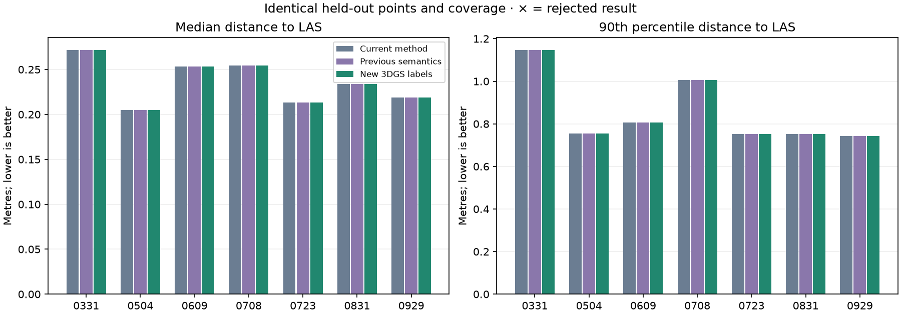

Current method: primary 7/7, strict 4/7; Previous semantics: primary 7/7, strict 5/7; New 3DGS labels: primary 7/7, strict 5/7.
With unchanged thresholds and four initial hypotheses per date, new accepted median improvements above 1 cm: 0; regressions: 0. Rejected results are shown in the table and are not counted as successes.
Method and findings · All results CSV · Stable structures · Recognition before / after
| Date | Current median / P90, m | Previous semantics, m | New labels, m | New acceptance | Strict: current / previous / new |
|---|---|---|---|---|---|
| 0331 | 0.272 / 1.148 | 0.272 / 1.148 | 0.272 / 1.148 | yes | yes / yes / yes |
| 0504 | 0.205 / 0.754 | 0.205 / 0.754 | 0.205 / 0.754 | yes | yes / yes / yes |
| 0609 | 0.253 / 0.805 | 0.253 / 0.805 | 0.253 / 0.805 | yes | yes / yes / yes |
| 0708 | 0.255 / 1.006 | 0.255 / 1.006 | 0.255 / 1.006 | yes | no / no / no |
| 0723 | 0.213 / 0.753 | 0.213 / 0.753 | 0.213 / 0.753 | yes | no / no / no |
| 0831 | 0.234 / 0.752 | 0.234 / 0.752 | 0.234 / 0.752 | yes | yes / yes / yes |
| 0929 | 0.219 / 0.742 | 0.219 / 0.742 | 0.219 / 0.742 | yes | no / yes / yes |
Identical held-out points; lower distance is better. This measures agreement with the supplied LAS. Full working scenes and BIM are preserved.

0708: strict check failed. Pairs with ≥80% forward and ≥50% reverse overlap: 3; valid triples in the initial bank: 0. For the best triple, second spatial axes in 3DGS / LAS are 1.962274 / 4.353667 m against a minimum of 2 m. Diagnostic matching of all fragments at the new final pose gives 3 eligible pairs and 0 valid triples; it does not affect acceptance.
0723: strict check failed. Pairs with ≥80% forward and ≥50% reverse overlap: 2; valid triples in the initial bank: 0. Diagnostic matching of all fragments at the new final pose gives 2 eligible pairs and 0 valid triples; it does not affect acceptance.
On 0708, a shared building class is unavailable: LAS has only 23 confident points against a minimum of 128. The class appears on 0723. All thresholds are unchanged.
| 3DGS → LAS | Forward overlap | Reverse overlap | Strict overlap and assignment |
|---|---|---|---|
| p3_c11 → p8_c23 | 1.8% | 2.9% | no |
| p4_c59 → p5_c119 | 0.0% | 0.0% | no |
| p5_c25 → p4_c46 | 92.8% | 86.9% | yes |
| p5_c27 → p6_c0 | 62.5% | 85.9% | no |
| p6_c19 → p5_c39 | 70.0% | 56.0% | no |
| p9_c16 → p6_c10 | 94.7% | 53.7% | yes |
| p9_c21 → p6_c8 | 86.0% | 90.0% | yes |
| p9_c36 → p6_c2 | 98.2% | 44.5% | no |
Final strict acceptance still requires at least three spatially separated supports.
| 3DGS → LAS | Forward overlap | Reverse overlap | Strict overlap and assignment |
|---|---|---|---|
| p10_c3 → p5_c31 | 0.0% | 0.0% | no |
| p1_c28 → p8_c18 | 0.0% | 0.0% | no |
| p5_c13 → p8_c41 | 80.3% | 100.0% | yes |
| p5_c31 → p8_c1 | 75.4% | 98.8% | no |
| p6_c12 → p5_c33 | 100.0% | 85.5% | yes |
| p8_c16 → p8_c39 | 71.2% | 55.4% | no |
Final strict acceptance still requires at least three spatially separated supports.